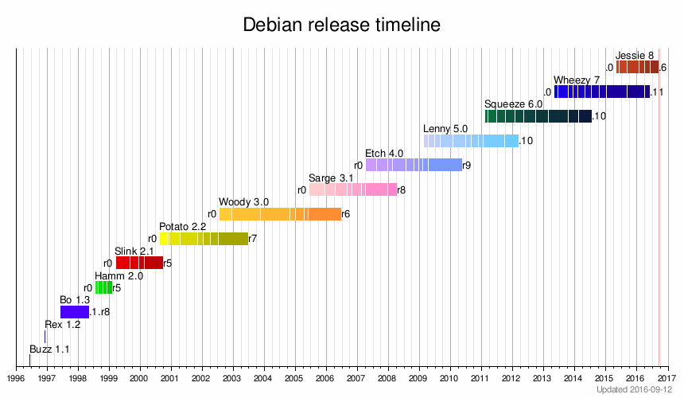

<!doctype html>
<html lang="en">

  <head>
    <meta charset="utf-8">

    <title>Jak zostać developerem Debiana</title>

    <meta name="description" content="A framework for easily creating beautiful presentations using HTML">
    <meta name="author" content="Dariusz Dwornikowski">

    <meta name="apple-mobile-web-app-capable" content="no" />
    <meta name="apple-mobile-web-app-status-bar-style" content="black-translucent" />

    <meta name="viewport" content="width=device-width, initial-scale=1.0, maximum-scale=1.0, user-scalable=no">

    <link rel="stylesheet" href="css/reveal.min.css">
    <link rel="stylesheet" href="css/theme/night.css" id="theme">

    <!-- For syntax highlighting -->
    <link rel="stylesheet" href="lib/css/zenburn.css">

    <!-- If the query includes 'print-pdf', include the PDF print sheet -->
    <script>
if( window.location.search.match( /print-pdf/gi ) ) {
  var link = document.createElement( 'link' );
  link.rel = 'stylesheet';
  link.type = 'text/css';
  link.href = 'css/print/pdf.css';
  document.getElementsByTagName( 'head' )[0].appendChild( link );
}
    </script>

    <!--[if lt IE 9]>
      <script src="lib/js/html5shiv.js"></script>
    <![endif]-->
  </head>

  <body>

    <div class="reveal">

      <!-- Any section element inside of this container is displayed as a slide -->
      <div class="slides">
        <section data-background="https://www.debian.org/logos/openlogo.svg">
          <h1>Jak zostać</h1>
          <h3>deweloperem Debiana</h3>
          <p>
          <a href="http://www.cs.put.poznan.pl/ddwornikowski/">Dariusz Dwornikowski</a> 
          </p>
          <p>Deweloper Debiana, Debian Poznań </p>
          <p>CTO w Tenesys</p>
          <p>Asystent w Instytucie Informatyki PUT</p>
        </section>

        <section data-background="https://www.debian.org/logos/openlogo.svg">
          <section>
            <h2>Projekt Debian</h2>
            <ul>
              <li>Od 1993 roku</li>
              <li>Niezależny od organizacji i firm</li>
              <li>Demokracja i "do-ocracy"</li>
              <li><a href="https://www.debian.org/social_contract">Social Contract</a> and Freedom</li>
              <li>Tysiące osób</li>
              <li>Nacisk na jakość</li>
            </ul>

          </section>
          <section>
            <h2>Trzy gałęzie</h2>
            <p>Stable (aktualnie Wheezy)</p>
            <p>Testing (następne stable Jessie)</p>
            <p>Unstable (sid)</p>
          </section>
          <section>
            <h2>Siedem wydań (do tej pory)</h2>
            
          </section>
            <section>
              <h2>Sukcesy</h2>
              <p class="fragment" >System operacyjny dla ISS <a
                 href="http://www.zdnet.com/to-the-space-station-and-beyond-with-linux-7000014958/">(
                 ogłoszenie )</a></p>
              <p class="fragment">Razem z pochodnymi najpopularnijszy na DistroWatch</p>
              <p class="fragment">Domyślny system RaspberryPI (Raspbian)</p>
              <p class="fragment">Podstawa <a href="http://store.steampowered.com/steamos">SteamOS</a></p>
              <p class="fragment"><a href="http://opensource.org/docs/osd">Definicja</a> open source oparta na DFSG</p>
            </section>
            <section>
              <h2>Podstawa dla ponad 300 dystrybucji</h2>
              <p>Ubuntu (Kubuntu, Xubuntu, Edubuntu...)</p>
              <p>Linux Mint</p>
              <p>Raspian</p>
              <p>SteamOS</p>
              <p>Knoppix</p>
              <p>Elementary OS</p>
            </section>
        </section>


        <section data-background="https://www.debian.org/logos/openlogo.svg">
          <section>
            <h2>Dlaczego warto dołączyć</h2>
            <p>Dla nauki i rozwoju</p>
            <p>Idealizm</p>
            <p>Doświadczenia (wpis w CV)</p>
          </section>
          <section>
            <h2>Typy członkostwa</h2>
            <ul>
              <li>Debian Contributor</li>
              <li>Debian Maintainer</li>
              <li>Debian Developer</li>
            </ul>
          </section>
          <section>
            <h2>Debian Contributor</h2>
            <p>Nieoficjalny typ członkostwa</p>
            <p>Zgłaszanie błędów</p>
            <p>Upload sponsorowanych pakietów</p>
            <p>Posyłanie łatek</p>
            <p>Tworzenie debtags i wgrywanie zrzutów</p>
            <p>Edycja wiki i tłumaczenia</p>
          </section>

          <section>
            <h2>Debian Maintainer</h2>
            <p>Oficjalny status (DM)</p>
            <p>W kręgu zaufania (klucz gpg)</p>
            <p>Prawa do uploadu wybranych pakietów</p>
          </section>

          <section>
            <h2>Debian Developer</h2>
            <p>Konto w LDAP w debian.org</p>
            <p>email@debian.org</p>
            <p>Prawo głosu !</p>
            <p>Prawo uploadu, sponsorowania !</p>
          </section>
        </section>

        <!-- Example of nested vertical slides -->
        <section data-background="https://www.debian.org/logos/openlogo.svg">
          <h2>Jak pomagać?</h2>
          <p class="fragment highlight-red">Paczkowanie</p>
          <p>Tłumaczenia</p>
          <p>Inne aktywności</p>
        </section>

        <section data-background="https://www.debian.org/logos/openlogo.svg">
          <h2>Co paczkować?</h2>
          <p>Nie własny soft </p>
          <p>Nowy pakiet</p>
          <p class="fragment highlight-red">Pakiet, który pragnie miłości</p>
        </section>

        <section data-background="https://www.debian.org/logos/openlogo.svg">
          <section>
            <h2>Work Needing and Prospective Packages</h2> 
            <p><a href="http://wnpp.debian.org">wnpp.debian.org</a> lub <a
                  href="https://www.debian.org/devel/wnpp/">tutaj </a></p>
            
          </section>
          <section>
            <h2>apt-get install how-can-i-help</h2>
            <pre>
tdi@blackstar ~ $ how-can-i-help --old
======  How can you help?  (doc: http://wiki.debian.org/how-can-i-help ) ======

Packages where help is needed, including orphaned ones (from WNPP):
 - apt-rdepends - http://bugs.debian.org/487125 - O (Orphaned)
 - libofa - http://bugs.debian.org/628474 - O (Orphaned)
 - makedev - http://bugs.debian.org/543592 - O (Orphaned)
 - orbit2 - http://bugs.debian.org/738869 - O (Orphaned)
 - pristine-tar - http://bugs.debian.org/737871 - O (Orphaned)
 - sane-backends-extras - http://bugs.debian.org/688532 - O (Orphaned)
 - stdeb - http://bugs.debian.org/739233 - O (Orphaned)
 ...

            </pre>
          </section>
        </section>

        <section data-background="https://www.debian.org/logos/openlogo.svg">
          <h2>Jaki pakiet wybrać na początek?</h2>
          <ul>
            <li>Nieskomplikowany</li>
            <li>Niewielki</li>
            <li>Z "żywym" upstream</li>
            <li>Osierocony (O) lub do adopcji (RFA)</li>
            <li>Taki, którego używamy, albo chociaż łatwo da się testować</li>
        </section>

        <section data-background="https://www.debian.org/logos/openlogo.svg">
          <h2>Oznaczamy chęć paczkowania</h2>
          <pre><code data-trim>
To: control@bugs.debian.org
Subject: 

retitle 3117 ITA: crashme -- Stress tests operating system stability
owner 3117 !
thanks
          </code></pre>
          <p>Ewentualnie używamy pakietu <strong>reportbug</strong> lub <strong>reportbug-ng</strong></p>
          <a href="https://www.debian.org/Bugs/server-control">Więcej o Debian BTS control server</a>
        </section>


        <section data-background="https://www.debian.org/logos/openlogo.svg">
          <h2>Zakładamy klucz GPG</h2>
          <p>Typ: RSA</p>
          <p>Długość klucza: 4096</p>
          <pre><code data-trim>
cat ~/.gnupg/gpg.conf
personal-digest-preferences SHA256
cert-digest-algo SHA256
default-preference-list SHA512 SHA384 SHA256 SHA224 AES256 \ 
AES192 AES CAST5 ZLIB BZIP2 ZIP Uncompressed
          </code></pre>
          <pre><code data-trim>
gpg --gen-key
gpg --keyserver subkeys.pgp.net --send-key KEYID
          </code></pre>
          Link: <a href="http://keyring.debian.org/creating-key.html">Creating a new GPG key</a>
        </section>


        <section data-background="https://www.debian.org/logos/openlogo.svg">
          <h2>Zapisujemy się na listy</h2>
          <p><strong>debian-mentors</strong> - pomoc dla nowych w paczkowaniu</p>
          <p><strong>debian-devel</strong> - techniczne aspekty, główna lista</p>
          <p><strong>debian-devel-announce</strong> - ogłoszenia związane z politykami itd</p>
          <p>Uczymy się <a href="https://www.debian.org/MailingLists/#codeofconduct">Code of conduct</a></p>
        </section>


        <section data-background="https://www.debian.org/logos/openlogo.svg">
          <h2>Skąd wziąć aktualny pakiet źródłowy ?</h2>
          <p><strong>debsnap pakiet</strong> pobierze wszystkie stare wersje pakietu</p>
          <p><strong>apt-get source pakiet</strong> pobierze aktualny dla dystrybucji</p>
          <p>Z git/svn </p>
        </section>

        <section data-background="https://www.debian.org/logos/openlogo.svg">
          <section>
            <h2>Struktura pakietu źródłowego</h2>
            <p>Pliki źródłowe + katalog <strong>debian/</strong></p>
            
          </section>
          <section>
            
          </section>
          <section>
            <p>control - informacje o pakiecie i pakietach binarnych</p>
            <pre><code data-trim>
Source: kerneltop
Section: devel
Priority: optional
Maintainer: Dariusz Dwornikowski &lt;dariusz.dwornikowski@cs.put.poznan.pl&gt;
Build-Depends: debhelper (&gt;= 9), autotools-dev
Standards-Version: 3.9.5
Homepage: http://www.infradead.org/~rdunlap/src/
Vcs-Git: git://anonscm.debian.org/collab-maint/kerneltop.git
Vcs-Browser: http://anonscm.debian.org/gitweb/?p=collab-maint/kerneltop.git


Package: kerneltop
Architecture: linux-any
Depends: ${shlibs:Depends}, ${misc:Depends}
Description: shows Linux kernel function usage in a style like top
 kerneltop shows Linux kernel function information usage (modules
 not included) like top do for process, and is derived from
 readprofile.
 .
 It needs profiling enabled on kernel on boot time.
            </code></pre>
          </section>
          <section>
            <p>copyright - licencje plików źródłowych w formacie <a
                 href="http://dep.debian.net/deps/dep5/">DEP-5</a></p>
            <pre>
Author: Author Name &lt;author.name@example.com&gt; 
Download: http://example.com/package 
Files: *
Copyright: 2002-2013 Author Name &lt;author.name@example.com&gt; 
License: GPL-2+
 This program is free software; you can redistribute it and/or
 modify it under the terms of the GNU General Public License
 as published by the Free Software Foundation; either version 2
 of the License, or (at your option) any later version.
 .
 This program is distributed in the hope that it will be useful,
 but WITHOUT ANY WARRANTY; without even the implied warranty of
 MERCHANTABILITY or FITNESS FOR A PARTICULAR PURPOSE. See the
 GNU General Public License for more details.
 .
 You should have received a copy of the GNU General Public License
 along with this program; if not, write to the Free Software
 Foundation, Inc., 51 Franklin Street, Fifth Floor, Boston, MA 02110-1301, USA.
 .
 On Debian systems, the complete text of the GNU General Public License
 can be found in /usr/share/common-licenses/GPL-2 file.
            </pre>
          </section>

          <section>
            <p>changelog - dziennik zmian z wersji na wersję</p>
            <pre><code data-trim>
kerneltop (0.91-2) unstable; urgency=medium

  * Updated architecture to linux-any (Closes: #745197)
  * Added patch to fix display 64bit addresses (Closes: #686791)
  * Added patch to etext on 64 bit systems
  * Fixed hardening hardening-no-relro and hardening-no-fortify-functions
  * Added VCS fields to d/control

 -- Dariusz Dwornikowski &lt;dariusz.dwornikowski@cs.put.poznan.pl&gt;  Sun, 13 Apr 2014 20:04:35 +0200

kerneltop (0.91-1) unstable; urgency=medium

  * New maintainer (closes: #729381)
  * Migration to dh 
  * Updated copyright and FSF address
  * Migration to format 3.0
  * Restored proper versioning
  * New upstream version
  * Updated project homepage
  * Patched makefile for hardening

 -- Dariusz Dwornikowski &lt;dariusz.dwornikowski@cs.put.poznan.pl&gt;  Fri, 27 Dec 2013 07:50:33 +0100
            </code></pre>
          </section>

          <section>
            <p>rules - reguły budowania pakietu</p>
            <pre>
#!/usr/bin/make -f
%:
  dh $@  --with autotools-dev

override_dh_auto_install:
  cp -p kerneltop $(CURDIR)/debian/kerneltop/usr/bin

            </pre>
            <pre>
#!/usr/bin/make -f
%:
  dh $@  --with autoreconf

override_dh_auto_build:
  dh_auto_build -- LDFLAGS="$(LDFLAGS) -lm"

override_dh_installchangelogs:
  dh_installchangelogs
  cp ChangeLog-20090517 debian/viewnior/usr/share/doc/viewnior/changelog
  gzip -9 debian/viewnior/usr/share/doc/viewnior/changelog

            </pre>
          </section>
        </section>

        <section data-background="https://www.debian.org/logos/openlogo.svg">
          <section>
            <h2>Budujemy pakiet</h2>
            <p><strong>debuild</strong>  (-us -uc - bez podpisu)</p>
            <pre>
dpkg-deb: building package `kerneltop' in `../kerneltop_0.91-2_amd64.deb'.
 dpkg-genchanges  >../kerneltop_0.91-2_amd64.changes
dpkg-genchanges: not including original source code in upload
 dpkg-source --after-build kerneltop
dpkg-source: info: unapplying 01-makefile-include-cflags.patch
dpkg-source: info: unapplying 03-adapt-printing-alignment-to-32-64bit-addresses.patch
dpkg-source: info: unapplying 02-fix-etext-on-64bit-system.patch
dpkg-buildpackage: binary and diff upload (original source NOT included)
Now running lintian...
P: kerneltop source: debian-watch-may-check-gpg-signature
P: kerneltop: no-upstream-changelog
Finished running lintian.
            </pre>
            <p class="fragment">Sprawdzamy jakość</p>
          </section>
          <section>
            <h2><a href="http://lintian.debian.org/">lintian</a></h2>
            <p>statyczna analiza pakietu<p>
            <p>odpala się przy budowaniu</p>
            <pre>
Now running lintian...
P: kerneltop source: debian-watch-may-check-gpg-signature
P: kerneltop: no-upstream-changelog
Finished running lintian.
            </pre>
            <p>
            <pre><code data-trim>
$ cat ~/.config/lintian/lintianrc
pedantic=yes
display-info=yes
            </code></pre>
          </section>
          <section>
            <h2>pbuilder</h2>
            <p>budowanie pakietów w czystym chroocie<p>
            <p>sprawdzenie zależności budowania</p>
            <p>alternatywa z copy-on-write - cowbuilder</p>
            <p><strong>cowbuilder/pbuilder --build pakiet.dsc</strong></p>
          </section>
          <section>
            <h2><a href="https://wiki.debian.org/piuparts">piuparts</a></h2>
            <p> testowanie instalacji</p>
            <p> testowanie uaktualnienia pakietu</p>
            <p><strong>puiparts pakiet.dsc</strong> </p>
          </section>
        </section>


        <section data-background="https://www.debian.org/logos/openlogo.svg">
          <section>
            <h2>Jak wgrać pakiet do Debiana ? </h2>
            <p>Sami nie możemy (póki co :) )</p>
            <p>Instytucja sponsoringu/mentoringu</p>
          </section>
          <section>
            <h2><a href="https://mentors.debian.net/">mentors.debian.org</a></h2>
            <p>Zakładamy konto na mentors.debian.org i wgrywamy swój klucz GPG</p>
            
          </section>
          <section>
            <h2>Wgrywamy pakiet na mentors</h2>
            <pre>
$ cat ~/.dput.cf
[mentors]
fqdn = mentors.debian.net
incoming = /upload
method = http
allow_unsigned_uploads = 0
progress_indicator = 2
# Allow uploads for UNRELEASED packages
allowed_distributions = .*

            </pre>
            <pre><code data-trim>
dput mentors kerneltop_0.91-2_amd64.changes
            </code></pre>
          </section>
          <section>
            
          </section>
          <section>
            <h2>Zgłaszamy błąd RFS</h2>
            <pre>
Subject: RFS: tanglet/1.2.2-1 [ITA]

Package: sponsorship-requests
Severity: normal

  Dear mentors,

  I am looking for a sponsor for my package "tanglet"

 * Package name    : tanglet
   Version         : 1.2.2-1
   Upstream Author : Graeme Gott <graeme@gottcode.org>
 * URL             : http://gottcode.org/tanglet/
 * License         : GPL-2+
   Section         : games

  It builds those binary packages:

    tanglet    - single player word finding game based on Boggle
    tanglet-data - single player word finding game based on Boggle - data files

  To access further information about this package, please visit the following URL:
  http://mentors.debian.net/package/tanglet
  Alternatively, one can download the package with dget using this command:
    dget -x http://mentors.debian.net/debian/pool/main/t/tanglet/tanglet_1.2.2-1.dsc
  More information about *tanglet* can be obtained from http://gottcode.org/tanglet/.

  Changes since the last upload:

  * Imported Upstream version 1.2.2
  * Added keywords to desktop file and menu entry (Closes: #738038)
  * Updated copyright to DEP-5
  * Added VCS fields to d/control
  * Watch file fixed
  * Migrated to dh
  * Compat changed to 9, bump standards to 3.9.5
  * Updated manpage (Closes: #617539)
  * New maintainer (Closes: #746458)
  * Split packages to tanglet-data and tanglet

  Regards,
   Dariusz Dwornikowski
            </pre>
          </section>
          <section>
            <h2>Co dalej ?</h2>
            <p>Czekamy na komentarze sponsora</p>
            <p>Poprawiamy</p>
            <p>Sponsor wgrywa pakiet do Debiana</p>
          </section>
          <section>
            <h2>Lifetime pakietu</h2>
            <p> Pakiet ląduje w unstable (sid)</p>
            <p class="fragment"> Po 5 dniach wpada do testing (aktualnie jessie)</p>
            <p class="fragment"> Gdy nadejdzie <i>freeze</i>, a pakiet nie ma błędów RC, wpada do stable</p>

          </section>
          <section>
            <h2>Zostaliśmy maintainerem pakietu </h2>
            <blockquote cite="http://en.wikipedia.org/wiki/Uncle_Ben">
              ...with great power there must also come -- great responsibility!
            </blockquote> 
            <br>
            <p>Zamykanie błędów </p>
            <p>Wgrywanie nowych wersji</p>
            <p>Praca z upstream</p>
            <p>Praca w projekcie</p>
          </section>
        </section>


        <section data-background="https://www.debian.org/logos/openlogo.svg">
          <section>
            <h2><a href="http://packages.qa.debian.org/common/index.html">Debian PTS (Package Tracking System)</a></h2>
            Np. http://packages.qa.debian.org/k/kerneltop.html
            

          </section>
          <section>
            <h2>DDPO - Debian Developer Packages Overview</h2>
            Np. http://qa.debian.org/developer.php?login=dariusz.dwornikowski%40cs.put.poznan.pl
            
          </section>
        </section>


        <section data-background="https://www.debian.org/logos/openlogo.svg">
          <section>
            <h2><a href="https://wiki.debian.org/DebianMaintainer">Aplikujemy o DM</a></h2>
            <p>Pokazaliśmy, że coś umiemy</p>
            <p>Mamy kilka pakietów pod sobą</p>
            <p>Znamy jednego DD</p>
            <p>Mamy to przemyślane</p>
          </section>
          <section>
            <h2>Poznajemy DD i prosimy od podpisanie klucza</h2>
            <p>W Poznaniu jest aktualnie 1</p>
            <p>Szukamy sobie DD w <a href="https://www.debian.org/devel/developers.loc"> bazie </a>
          </section>
          <section>
            <h3>Piszemy deklarację chęci zostania DM</h3>
            <p>Deklaracja musi być podpisana naszym kluczem</p>
            <p>Wysyłamy na listę <strong>debian-newmaint</strong></p>
            <pre>
Subject: DM application of &lt;your name&gt;
This is my declaration of intent to become a Debian Maintainer
&lt;URL:http://wiki.debian.org/DebianMaintainer&gt;.
I have read the <strong>Social Contract, Debian Free Software Guidelines and
Debian Machine Usage Policy</strong> and agree with all of them.
Currently, I maintain the packages TWOJE PAKIETY
and I co‐maintain the packages PAKIETY 
My GnuPG key ID KLUCZA is signed by the Debian Developer IMIE I NAZWISKO DD
I look forward to becoming a Debian Maintainer. Thanks for your attention.
            </pre>
          </section>
          <section>
            <h3>Prosimy DD o wsparcie kandydatury</h3>
            <p>Ktoś kto sponsorował nam pakiety</p>
            <p>Ktoś kto wie co umiemy</p>
          </section>
          <section>
            <p>Tworzymy changeset do jetringu podpisów (<a href="https://wiki.debian.org/DebianMaintainer#step_4_:_Account_creation">instrukcje</a>)</p>
            <p>Miesiąc później jesteśmy DM</p>
            <p>Teraz DD może nadać nam prawa do uploadu wybranych pakietów</p>
            
          </section>

        </section>
        </section>


        <section data-background="https://www.debian.org/logos/openlogo.svg">
          <h2>Co robić dalej ?</h2>
          <p>Założyć konto na Alioth.debian.org</p>
          <p>Zapisać się do zespołu paczkującego np. Debian Games, Debian Science, itd <a href="https://wiki.debian.org/Teams">lista zespołów</a></p>
          <p>Zapisać się do projektu <a href="https://alioth.debian.org/projects/collab-maint/">collab-maint</a></p>
          <p>Nauczyć się <a href="https://wiki.debian.org/PackagingWithGit">git buildpackage</a></p>
          <p>Wejść na kanały IRC: #debian, #debian-mentors na irc.debian.org</p>
        </section>

        <section data-background="https://www.debian.org/logos/openlogo.svg">
          <h2>Linki</h2>
          <p><a href="https://www.debian.org/doc/manuals/maint-guide/index.en.html">Debian New
            Maintainer Guide</a></p>
          <p><a
                href="https://www.debian.org/doc/manuals/packaging-tutorial/packaging-tutorial.en.pdf">Introduction
                to Debian packaging</a></p>
          <p><a href="https://www.debian.org/doc/debian-policy/">Debian Policy</a></p>
          <p><a href="https://wiki.debian.org/PackagingWithGit">Packaging with Git</a></p>
          <p><a href="https://www.lrde.epita.fr/~adl/dl/autotools.pdf">Autotools tutorial</a></p>

        </section>

        <section data-background="https://www.debian.org/logos/openlogo.svg">
          <h2>Dziękuję za uwagę</h2>
          <h3>Kontakt</h3>
          <p><a href="https://wiki.debian.org/LocalGroups/DebianPoz"> Grupa Debian Poznań </a></p>
          <p>email: darek@debian.org</p>
          <p>IRC: tdi@{freenode, OFTC} (sometimes)</p>
          <p>Prezentacja: https://github.com/tdi/debian-developer-howto-talk-pl/</p>

        </section>


      </div>

    </div>

    <script src="lib/js/head.min.js"></script>
    <script src="js/reveal.min.js"></script>

    <script>

// Full list of configuration options available here:
// https://github.com/hakimel/reveal.js#configuration
Reveal.initialize({
  controls: true,
  progress: true,
  history: true,
  center: true,

  theme: Reveal.getQueryHash().theme, // available themes are in /css/theme
  transition: Reveal.getQueryHash().transition || 'default', // default/cube/page/concave/zoom/linear/fade/none

  // Parallax scrolling
  // parallaxBackgroundImage: 'https://www.debian.org/logos/openlogo.svg',
  // parallaxBackgroundSize: '2100px 900px',

  // Optional libraries used to extend on reveal.js
  dependencies: [
  { src: 'lib/js/classList.js', condition: function() { return !document.body.classList; } },
  { src: 'plugin/highlight/highlight.js', async: true, callback: function() { hljs.initHighlightingOnLoad(); } },
  { src: 'plugin/zoom-js/zoom.js', async: true, condition: function() { return !!document.body.classList; } },
  { src: 'plugin/notes/notes.js', async: true, condition: function() { return !!document.body.classList; } }
  ]
});

    </script>

  </body>
</html>
